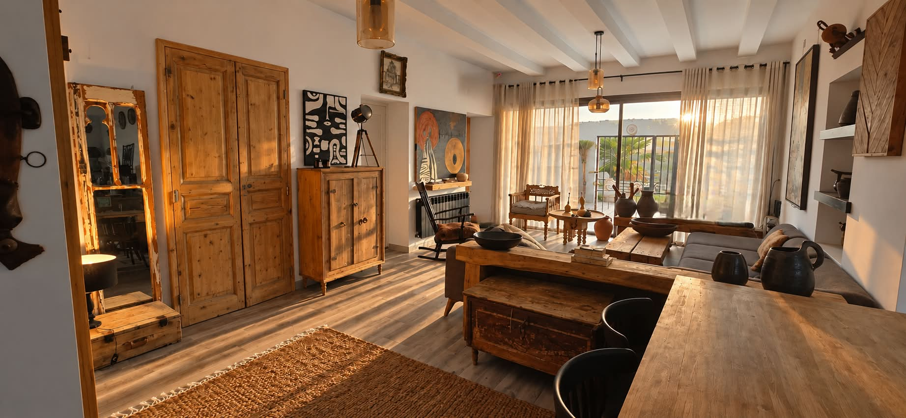
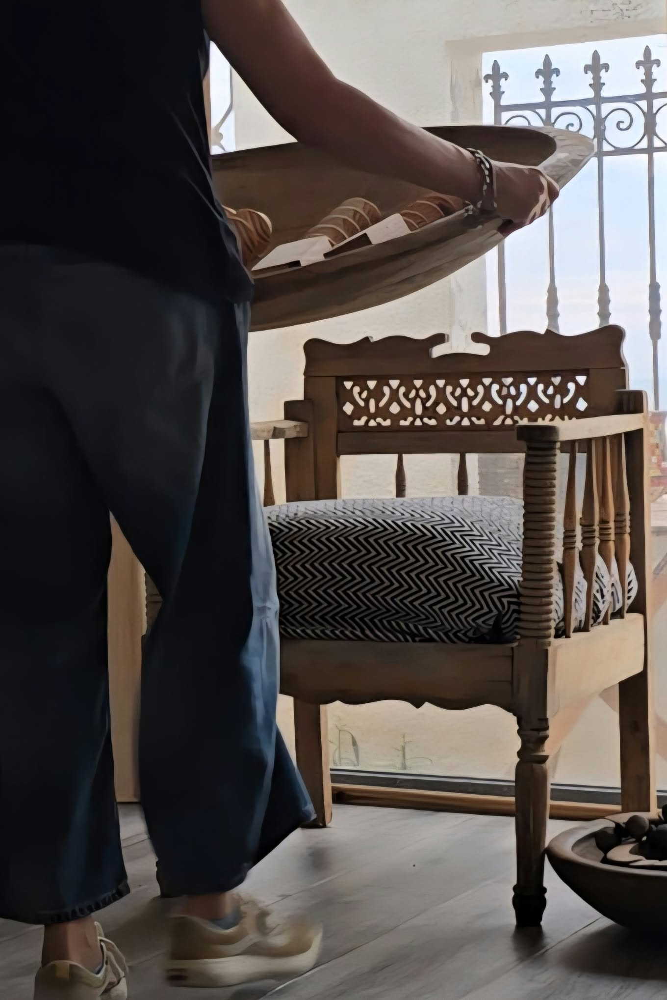
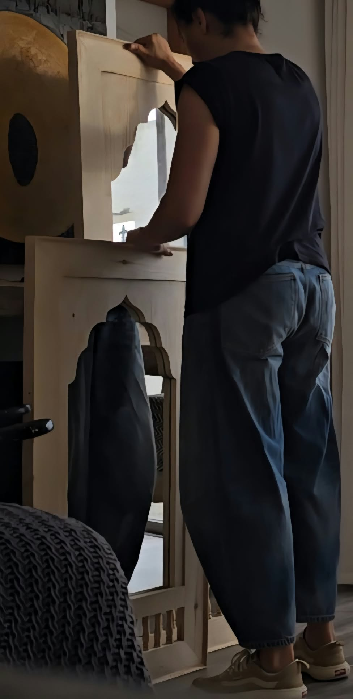
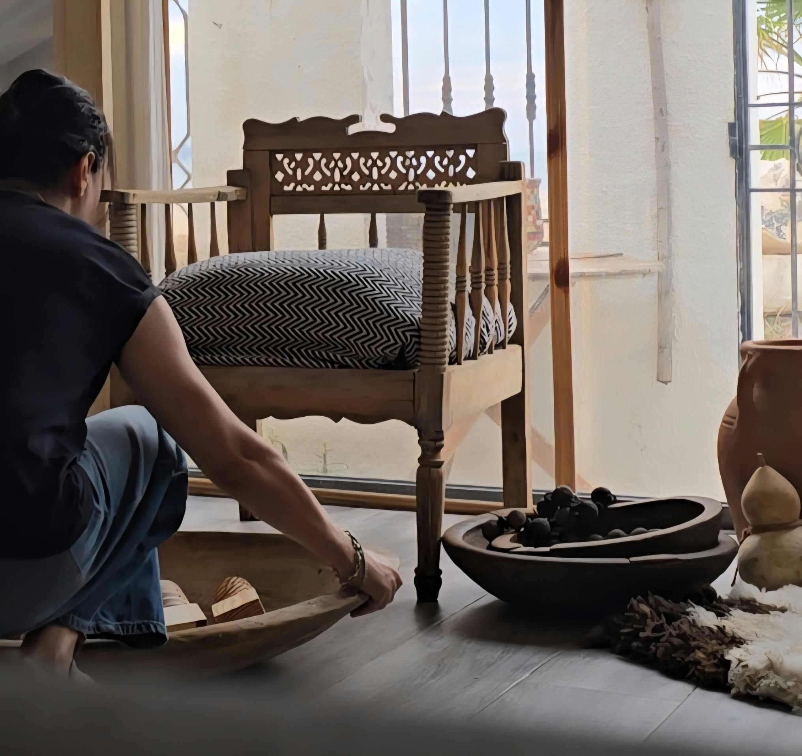
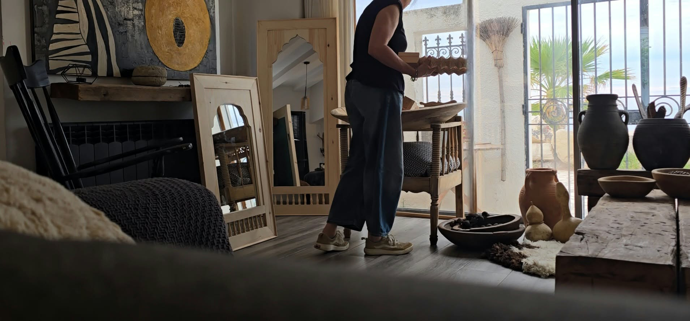

ATELIER DE CREATION ET DE RESTAURATION DE MEUBLES
.png)





Bienvenue chez D'Art Dar, là où les objets retrouvent une âme.
D'Art Dar est bien plus qu'un atelier de restauration et de décoration : c'est un lieu où le patrimoine, le savoir-faire artisanal et la création contemporaine se rencontrent.
Nous redonnons vie aux meubles anciens, aux objets oubliés et aux pièces uniques en respectant leur histoire tout en leur offrant une nouvelle existence. Chaque création est pensée avec exigence, réalisée à la main et portée par la passion du travail bien fait.
Nous croyons que l'artisanat est un patrimoine vivant. C'est pourquoi nous mettons à l'honneur les artisans tunisiens, les matériaux nobles et les techniques traditionnelles, tout en les réinterprétant dans un esprit intemporel, méditerranéen et raffiné.
Chez D'Art Dar, chaque pièce raconte une histoire. La vôtre commence peut-être ici.
1 Rue Sakiet Sidi Youssef
Ezzahra, Ben Arous,
Tunis, Tunisie
Je suis Myriam Ksouri, docteure en sciences du langage, enseignante-chercheuse et fondatrice de D'Art Dar.
Depuis toujours, je suis animée par une même conviction : transmettre, créer et préserver le patrimoine. Si mon parcours professionnel est consacré à la recherche et à l'enseignement, ma passion pour l'art, la restauration et l'artisanat m'a conduite à donner naissance à D'Art Dar, un atelier où chaque création est le fruit d'un dialogue entre mémoire, matière et savoir-faire.